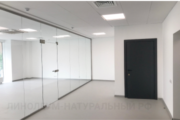
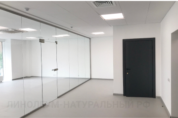

Натуральный линолеум с дизайном, имитирующим бетон, в офисном помещении
Для коридоров и офисов элитного жилого дома в Санкт-Петербурге мы предложили красивое напольное покрытие — натуральный линолеум Forbo Marmoleum Concrete. Это однотонное напольное покрытие стало отличной базой для интерьеров офисов арендаторов.
Натуральный линолеум в офисных помещениях
Наш клиент подбирал натуральное напольное покрытие для офисов (на фото) элитного жилого дома на Васильевском острове в Санкт-Петербурге. У этого жилого комплекса было оригинальное название ЖК«24 29» — все по тому, что он расположен на 24 линии в доме 29.
На коллекции натурального линолеума Forbo Marmoleum Concrete клиент остановился не случайно. Спокойные и строгие дизайны покрытия, напоминающие бетон или камень, органично вписываются в любой интерьер, какой цветовой гаммы не придерживались бы арендаторы.
Коллекция натурального линолеум Forbo Marmoleum Concrete выпускается в толщине 2,5 мм, что позволяет использовать ее в дизайне с другими напольными покрытиями. Это отличный вариант для офиса, так как покрытие не боится колесиков мебели, а также каблуков.
 

Используемые артикулы коллекции Marmoleum Concrete: